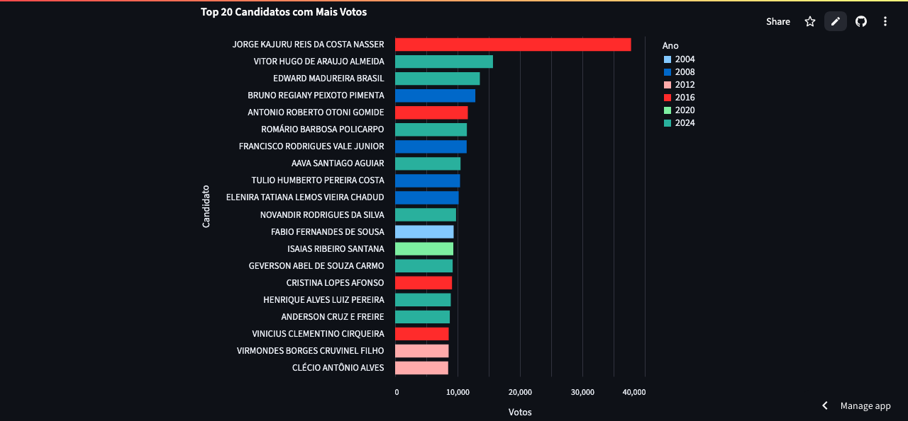

Habilidades
- Python para análise de dados (pandas, matplotlib, seaborn, Streamlit)
- Visualização de dados (Power BI, Tableau, Streamlit)
- Pesquisa aplicada em Ciências Sociais (quantitativa e qualitativa)
- Estatística descritiva e testes de hipótese
- Automação de tarefas e coleta de dados públicos
Experiências com Dados
- Konecta (2023): apoio em análise de dados operacionais e relatórios internos em ambientes de alto volume.
- Consultoria política: monitoramento de redes sociais e visualização de desempenho eleitoral.
- Projeto acadêmico: uso de dados da POF e IRPF para estudar regressividade tributária no Brasil.
Projetos

Painel de Vereadores de Goiás
Dashboard interativo com os dados de todos os vereadores eleitos em Goiás de 2004 a 2024.
🔗 Acessar app
Mapa Eleitoral de Goiânia
Visualização da votação por bairro/microrregião nas eleições de 2022.
🔗 Ver projeto no GitHub
Teste Qui-quadrado em candidaturas negras
Análise de representatividade racial nas eleições de 2020 usando Python e estatística descritiva.
🔗 Ver repositório